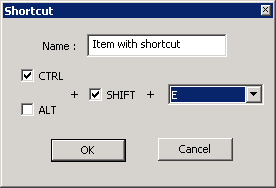
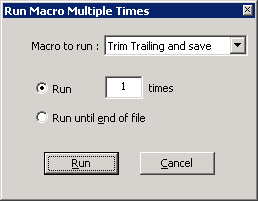

Macros
Notepad++ is capable of recording some of your actions you perform while editing a document, and replaying those later on to avoid having to repeat that sequence of actions. This is called a macro and can save a great deal of time. Macro's can be played once, or multiple times, even as long as is required to run through an entire document. You can save them for later use and assign keystrokes to them for fast access (See Shortcut Mapper). Macro's are sensitive to the current position of the cursor and will (normally speaking) operate relative on it.
To record a macro, select or press the button on the toolbar. Notepad++ will now keep track of the changes you make on a document or certain actions you perform.
To stop recording, select or select the button on the toolbar. As an exception to most commands, you can toggle this behavior with a special shortcut combination that is not listed in the menu but solely in the Shortcut mapper (see Settings, Shortcutmapper). By default, this is the combination Ctrl-Shift-R.
After the recording is stopped, it will be stored in a temporary buffer. If you haven't performed any actions, this buffer will be cleared. If you start recording another macro without saving your earlier work, it will be lost.
To play the macro in the buffer, select or press the button. This will perform the macro once at the current position.

To save the macro in the buffer, select current recorded macro or press the button. A dialog will pop up asking for a name of the macro and the default key combination. These can later be changed (and deleted) using the Shortcutmapper (see Shortcut Mapper). When saved, the macro will be available from the Macro menu or the Macro playlist.

To play the current macro in the buffer or any saved macro once or multiple times, select or press the button. A dialog will pop up allowing you to select what macro to perform (buffer macro or any saved macro) and how many times. You can also opt to perform the macro until the cursor reaches the end of the current file (starting from its current position). Note that if no macro's are available, this dialog is inaccessible.
To edit or delete an existing macro shortcut, you can use the Shortcut mapper, which displays all shortcuts of all kinds, and allows changing or removing a key binding. The interface is also available through the entry on the Macros menu. Note that the contents of a macro efinition can be edited only in the shortcuts.xml file.